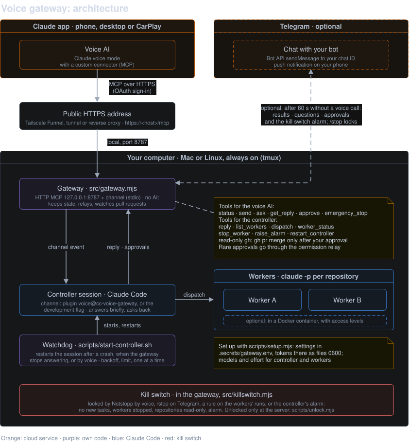

A prototype · Claude voice mode × Claude Code
Talk to Claude in your car or on your phone. A Claude Code session on your own computer picks up the request and does the work in your repositories: versioned with git, delivered as pull requests, merged only when you say yes.
90 seconds, with voiceover and captions.
Hours every week go to traffic. Claude's voice mode is a great partner to think out loud with, but it can't reach Claude Code, the agent that does the real work in your repositories. In the Claude app, Claude Code only has dictation.
Understands you in any language, keeps the context, reads answers aloud. In the Claude app, also in CarPlay.
Reads and changes your code, runs your tests, commits, pushes and opens pull requests. On your computer.
How it works
cc-voice-gateway runs on your computer. Claude's voice mode reaches it as a custom connector; it hands each request to a running Claude Code session and brings back answers, questions and approvals.
In Claude's voice mode, in the car or on the phone. "Why did the build fail on main?"
A Claude Code session on your computer understands the request, asks back if needed, and dispatches the work.
Workers run Claude Code in your repositories, on your computer or in a Docker container. You hear the result in a sentence or two.

The architecture. More diagrams, from a single request to the security design, are in the technical README.
What you can say
Name the repository the way its folder is called. Results come back as news, even when they take a while.
Reviewed, not rushed
Every change is versioned with git and arrives as a pull request. You hear about it in the car, and review it at your desk like any other.
voice/ branch, push it and open a draft pull request.Built for the road
Answers are written to be heard: at most three short sentences, the result first, no code, no file paths, no URLs.
When Claude Code needs permission, you hear what it wants to do and answer yes or no.
Say "emergency stop" or "Notstopp", or send /stop on Telegram: the gateway locks in its own code, every worker stops, and only you can unlock it, at your computer.
Work takes minutes. You hear results as news in your next conversation, or on Telegram once the call has ended.
Keep your eyes on the road. Use it only where it is safe and legal, and follow the rules on phone use while driving where you are.
What you need
Everything runs on a computer of yours that stays on. A setup assistant walks you through the keys and settings; the technical README has the details.
cc-voice-gateway is solely a prototype of an idea: a way to use Claude Code from Claude's voice mode, which cannot reach Claude Code on its own. It comes without warranty and without support, and there is no communication of any kind about this project: no announcements, no support, no answers to issues or messages. It is not an Anthropic product.